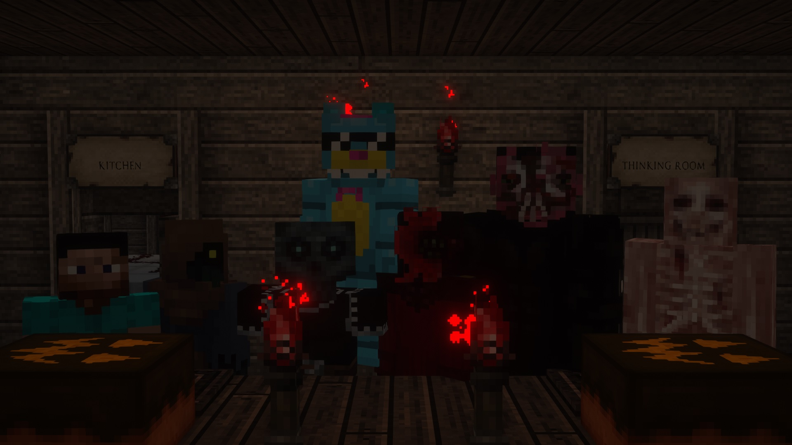

THE AFTERLIFE MC
Welcome to the Afterlife!
The afterlife is a friends-only minecraft server hosted by Amity and Annie. Archived world files can be found in the downloads tab.
If you'd like to support the server, the ko-fi is below! Donations are not expected, but appreciated!
- THE AFTERLIFE TEAM